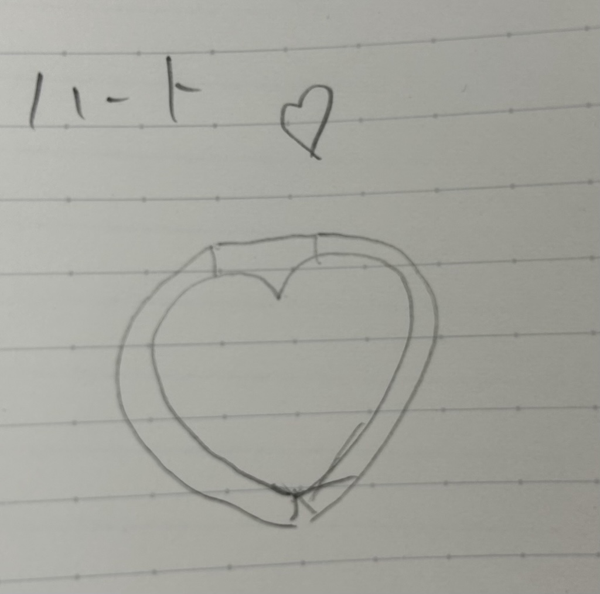
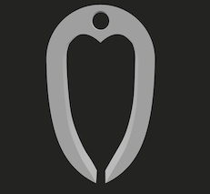
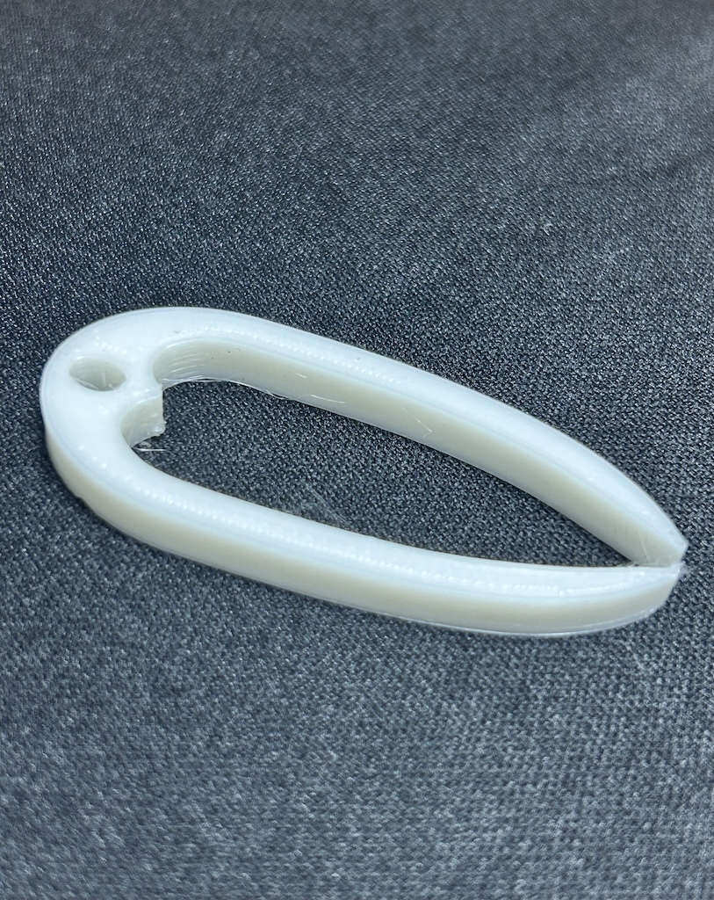
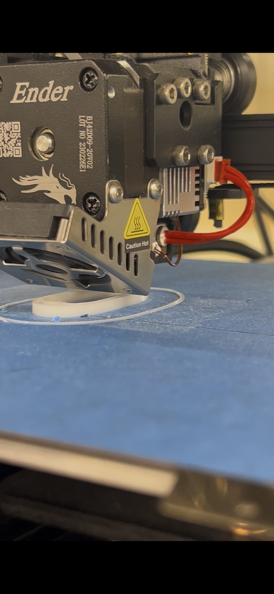

今回、長さ50mm×幅20mm×高さ5mmのピンセットを作成しました。

最初は手書きスケッチのような全体的に丸い形を考えていましたが、
なかなかうまくFusionに描くことが出来なかったため長方形の形にしました。

そして出来上がったのがこちらになります。

fusionでは色々と失敗してしまい1作目ではCuraまで持って行くことが出来なかったですが、
2作目に作ったこれでは上手に作ることが出来てよかったです。
stlファイル
作品の説明
今回初めての3Dプリントだったため、なかなか細かいことをすることが出来なかったため、
比較的簡単に作ることができ可愛いハート型のピンセットを作りました。
指定のサイズが小さかったので持ち運びできるように上の方には紐などを通すことができる穴も作りました。
Fusionで設計すると最初に考えていた丸いフォルムではうまく作ることが出来なかったので細長い形にシフトチェンジして設計しました。

3Dプリントをし、約14分で完成しました。
初めはFusionで躓きなかなか難しかったのですが、自分で1から新しいものを作り上げるという新しい経験ができ、とても楽しかったです。
次はもう少し難しくオリジナリティのあるものを作ってみたいです。
デザイン演習Ⅰ・Ⅱトップページ